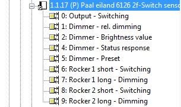
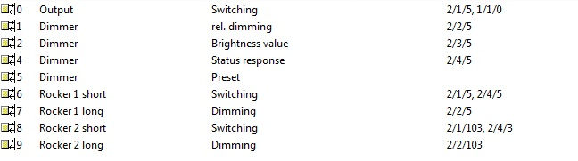

Nun möchte ich für's Licht einen "Switch" erstellern. Hierfür wird bekanntlich ein Sensor benötigt und dieser wiederum habe ich mittels Command "Status" und DPT 1.001 versucht zu erstellen. Leider erfolglos.
Die Arbeitsprozesse habe ich analog Youtube Anleitung von Openremote vorgenommen.
Woran kann das liegen? Verwende ich eine falsche DPT? Untersützt der Siemens N148 diesen Command nicht? Fragen über Fragen...
|
Um einen Switch zu realisieren benötigst Du 3 commands. Ein "On", ein "Off" und ein Status command. Das "On" und "Off" command haben dieselbe Gruppenadresse nur jeweils mit "on" und "off" und das Status Command bekommt die Gruppenadresse auf der Dein Aktor den Status verschickt. Als command ist hier "Status" einzugeben. Dann wird ein Sensor definiert, der das Status-Command referenziert und dann ein Switch, der den Sensor und das "On" und "Off" command referenziert.
Liefert Dein Aktor auch den Status auf einer dedizierten Gruppenadresse?
Was genau funktioniert nicht? Hast Du Fehlermeldungen im Log-File?
Es liegt nicht am N148. Den hab ich hier auch es funktioniert ohne Probleme 

Posted by mredeker at Jul 26, 2011 21:45
|
|
Hi Marcus
Und da war der Fehler begraben... Ich hatte für den Status die selbe Gruppenadresse wie beim ON/OFF. Es funktioniert nun und ich kann den "Switch" erstellen.
Kannst du mir evtl. auch kurz sagen, wie ich den Slider erstelle? Den kriege ich noch nicht hin...
Danke und Gruss
Nandi
Posted by nandi at Jul 26, 2011 22:16
|
|
Für den Slider benötigst Du ein command mit DPT 5.001 und Command "Scale" zum Setzen des Wertes und ein Status command DPT 5.001 mit "Status". Der Slider braucht dann einen Sensor, der das Status command referenziert, und das eigentliche Command zum Setzen des Wertes.
Posted by mredeker at Jul 26, 2011 22:25
|
|
ups... da bin ich wohl noch zu sehr Anfänger... ich mache wohl die erste visu ohne Slider. Danke auf jeden Fall für die Hilfe!
Posted by nandi at Jul 26, 2011 22:55
|
|
DPT 5.001 bedeutet eigentlich nur, dass es ein 1byte Wert ist. Dies ist z.b. ein absoluter Dimmwert.
Vielleicht hilft Dir das ja noch weiter
Posted by mredeker at Jul 26, 2011 23:11
|
|
Is there an enlish version of this please, the dimming function and commands interest me too...
Posted by icefluffy at Aug 22, 2011 11:08
|
|
For the slider you need 2 KNX commands to set and read the absolute dimming value (1 Byte). It's a DPT 5.001 object in KNX. One command to set the value (command type: Scale) and one for reading the value (command type: Status). After creating those 2 command you need a Sensor which uses the "status" command. After that you can create a Slider which is linked to the Sensor and the Set-Command.
You can see it work on the documentation page: ETS4 Import How-To
Posted by mredeker at Aug 22, 2011 12:47
|
|
Thanks for the advise... took me a while to get it right but now I can slide the slider and see the lights dim and brighten.
HOwever, it never switches the lights completely off.
Also if I push the switches on the wall, the slider is not moving on the screen. Any ideas?
I have in ETS 4 values for each dimmer:
2/1/5 ON/OFF (1bit)
2/2/5 Dimmer (4 bits)
2/3/5 Value (1 Byte)
2/4/5 Status (1 bit)
I linked the Value to a command with KNX command Scale, type 5.001. I linked the Dimmer to a command with KNX command Status, type 5.001. Then to the Sensor I added this Dimmer (Status) command. The slider uses this Sensor (with the Dimmer (4 bits)) and to setValue I used the Value (Scale) command. Hope this makes sense to you.
This is what I got in controller.xml:
<command id="54" protocol="knx">
<property name="command" value="Scale" />
<property name="groupAddress" value="2/3/5" />
<property name="DPT" value="5.001" />
</command>
<command id="56" protocol="knx">
<property name="command" value="Status" />
<property name="groupAddress" value="2/2/5" />
<property name="DPT" value="5.001" />
</command>
Form the different posts it looks all similar and good, but my slider is not updating automagically. For completeness, I am running the OpenRemote controller 2.0.0_snapshot_20110611.
Any help or advise appreciated!
Rick
Posted by rickcn at Sep 08, 2011 10:09
|
|
Rick,
2/2/5 is a Dimming command (up, down) not the dimmer value status. You need a group address for the dimmer value also, which would also be 1 byte. So you need switch on/off and status which are 2 group addresses each 1 bit and you need dimmer value set and status which are both 1 byte.
You can see a demo in the ETS4 import howto in the documentation section. Maybe that helps to demonstrate what you need.
If your lights don't turn off when dimming to zero make sure your KNX dimmer device is configured correct. Normally these can be configured to allow turn off while dimiing.
Posted by mredeker at Sep 08, 2011 10:27
|
|
Hi Marcus,
Thanks for the hints. I had the feeling that 2/2/5 was something else than the value status. However, the only status which I can find in the KNX Actor is the status which accepts a bit and not a byte. So unless I use the same value parameter to set the value of the dimmer as well as read the dimmer, I am lost of ideas how to pull this off.
This is my actor as defined in ETS3:

And the group addresses are as follows linked to it:

If you have any suggestions where to find the 1Byte dimmer status, I would be very grateful.
Rick
Posted by rickcn at Sep 08, 2011 18:25
|
|
Is that a binary input and dimmer in one device? Can you give me a model number and where to download the ETS application? I need to look at this further to figure out howto configure this.
Posted by mredeker at Sep 08, 2011 18:28
|
|
Looking at you screenshot, the device name looks like "6126 2f-Switch sensor".
That looks to me like a BushJaeger switch sensor and not a dimming actuator.
Posted by mredeker at Sep 08, 2011 18:52
|
|
Marcus,
Sorry for the confusion. It used to be a switch 6126, but it was replaced with a 6932-U101-500 DimmActor/Sensor.
The modules are obtained from the Busch-Jaeger website. ETS3 is a licensed copy from my electrician.
Rick
Posted by rickcn at Sep 08, 2011 19:26
|
|
I just downloaded 6932.zip and created a Powernet project but the application does not look like your screenshot. And the application I have does not have any status objects at all. Looks like you are out of luck, sorry.
Posted by mredeker at Sep 08, 2011 21:00
|
|
Not even the standard 1b status object?
Rick
Posted by rickcn at Sep 08, 2011 21:08
|
|
No. Maybe you can send me your application? marcus at openremote dot org
Posted by mredeker at Sep 08, 2011 21:18
|
|
which application? ETS3? or the ETS3 project?
Rick
Posted by rickcn at Sep 08, 2011 22:05
|
|
The Application for the dimmer would be ok. Should be a VD2 or VD3 file. Otherwise you can also send me the ETS3 project if you want to. That will include the other stuff also.
Posted by mredeker at Sep 08, 2011 22:53
|
|
Thanks.... Solved it!
You brought up to the right idea. I just had to link two variables to the same parameter DimmerValue, as this is a read/write group address.
So, I made a command DimmerValue pointing to 2/3/5, with type Status, DPT 5.001 and I made a command Value pointing again to 2/3/5 of type Scale, DPT 5.001.
When I created the sensor DimmerSensor, I used the DimmerValue as the argument and a range (or level). When I created the slider DimmerSlider, I used the DimmerSensor and the command Value as arguments. Now the slider moves with the light switches on the , goes off when I slide it all the way left, and also provides a more natural feeling than before.
I hope this makes sense. Maybe I should update my little Tutorial before.... tomorrow!!
Thanks again for your inspiration!
Rick
Posted by rickcn at Sep 09, 2011 00:35
|
{kind=link}
{kind=link}
{kind=link}
{kind=link}
{kind=link}